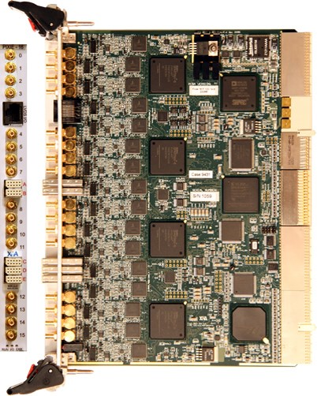
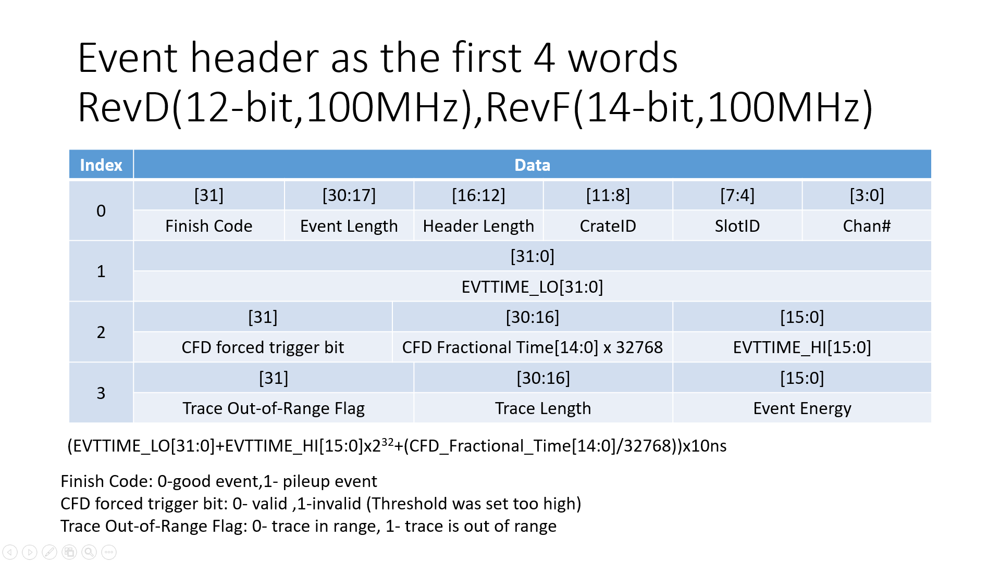
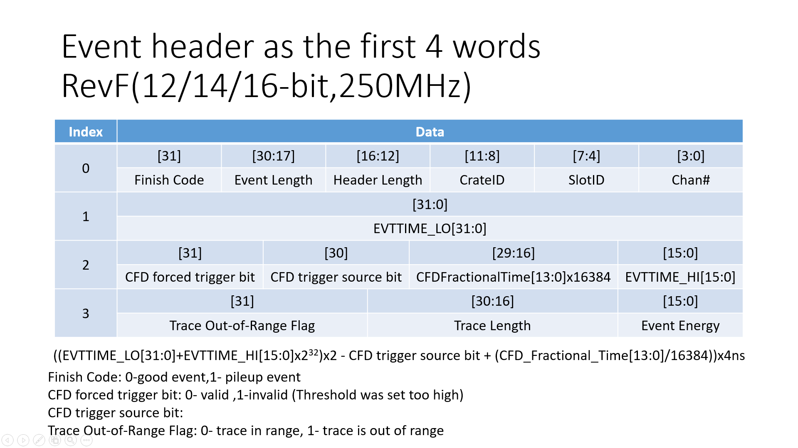
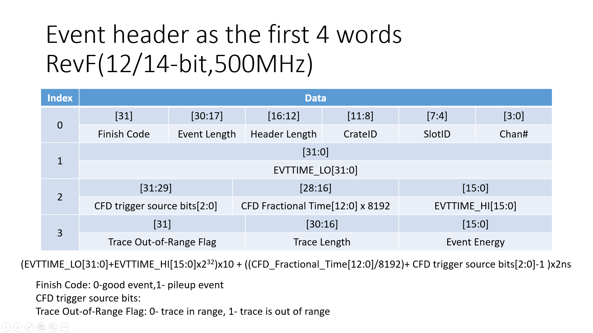

Guide¶
User’s Manual Digital Gamma Finder (DGF) PIXIE-16 Version 1.40, October 2009
Pixie-16 User Manual Version 3.00 August 21, 2018
Important
The Pixie-16 is designed for single exponentially decaying signals.
Step pulses or short non-exponential pulses can be accommodated with specific parameter settings.
Staircase type signals from reset preamplifiers generally need to be AC coupled.
Danger
The amplitude of the detector output signals is not recommended to exceed +/-3.5V if 50Ohm input termination jumper is installed and the 1:4 attenuation is not used.
Do Not Hot-Swap!
To avoid personal injury, and/or damage to the DGF-Pixie-16, always turn off crate power before removing the DGF-Pixie-16 from the crate!

The DGF Pixie-16 is a 16-channel all-digital waveform acquisition and spectrometer card based on the CompactPCI/PXI standard for fast data readout to the host. It combines spectroscopy with waveform digitizing and the option of on-line pulse shape analysis. The Pixie-16 accepts signals from virtually any radiation detector. Incoming signals are digitized by 12/14/16-bit 100/250/500 MSPS ADCs. Waveforms of up to 163.8 μs in length for each channel can be stored in a FIFO.
The waveforms are available for onboard pulse shape analysis, which can be customized by adding user functions to the core processing software. Waveforms, timestamps, and the results of the pulse shape analysis can be read out by the host system for further off-line processing. Pulse heights are calculated to 16-bit precision and can be binned into spectra with up to 32K channels. The Pixie-16 supports coincidence spectroscopy and can recognize complex hit patterns.
Data readout rates through the CompactPCI/PXI backplane to the host computer can be up to 109 Mbyte/s. The standard PXI backplane, as well as additional custom backplane connections are used to distribute clocks and trigger signals between several Pixie-16 modules for group operation. A complete data acquisition and processing systems can be built by combining Pixie-16 modules with commercially available CompactPCI/PXI processor, controller or I/O modules in the same chassis.
The Pixie-16 is an instrument for waveform acquisition and MCA histogramming for arrays of gamma ray or other radiation detectors such as
- 100 MSPS
Segmented HPGe detectors.
Scintillator/PMT combinations: NaI, CsI, BGO and many others.
Gas detector.
Silicon strip detectors.
- 250 MSPS
Scintillator
LaBr3
- 500 MSPS
Scintillator
LaBr3
The Pixie-16 modules must be operated in a custom 6U CompactPCI/PXI chassis providing high currents at specific voltages not included in the CompactPCI/PXI standard 1 . Currently XIA provides a 14-slot chassis. Put the host computer(or remote PXI controller) in the system slot (slot 1) of your chassis. Put the Pixie-16 modules into any free peripheral slot (slot 2-14) with the chassis still powered down. After modules are installed, power up the chassis (Pixie-16 modules are not hot swappable). If using a remote controller, be sure to boot the host computer after powering up the chassis.
Data Structures¶
  If trace recording is enabled, trace data will immediately follow the last word of the event header. Since raw ADC data points are 12/14/16-bit number, two 12/14/16-bit numbers are packed into one 32-bit word. Since the event header could have variable length(4,6,8,10,12,14 ,16 or 18 words) depending on the selection of various output data options, the header length, event length and trace length that are recorded in the first 4 words of the event header should be used to navigate through the output data stream.